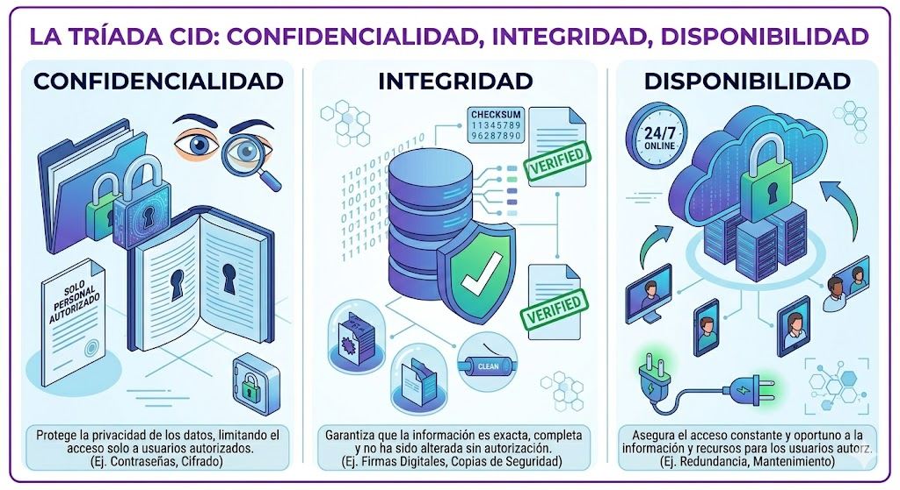
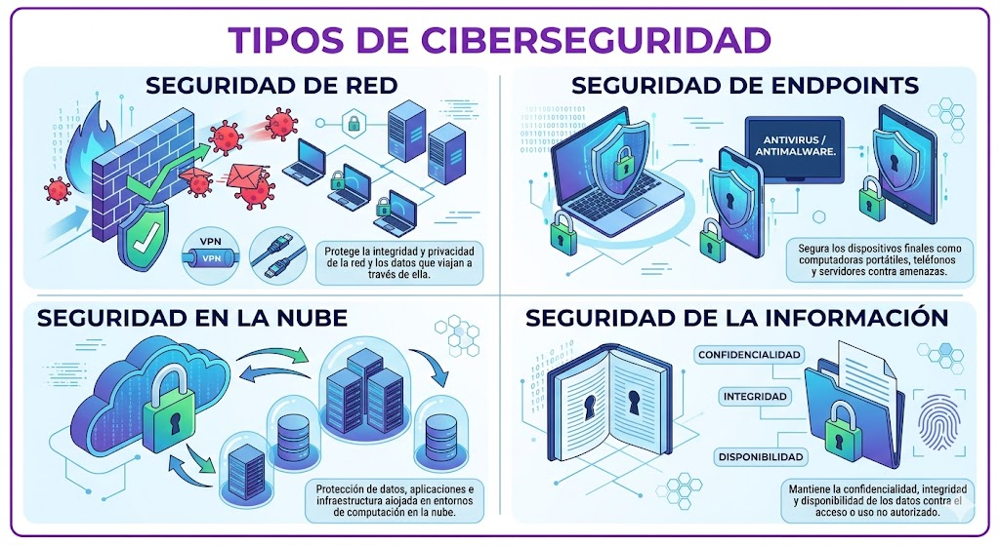
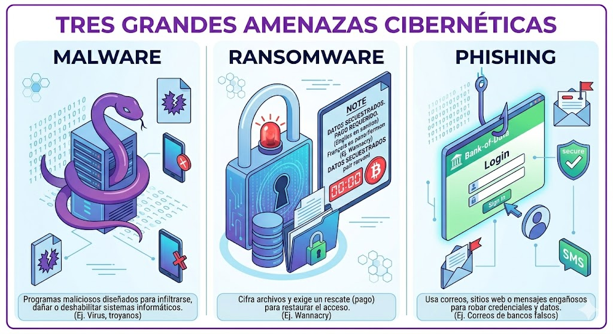
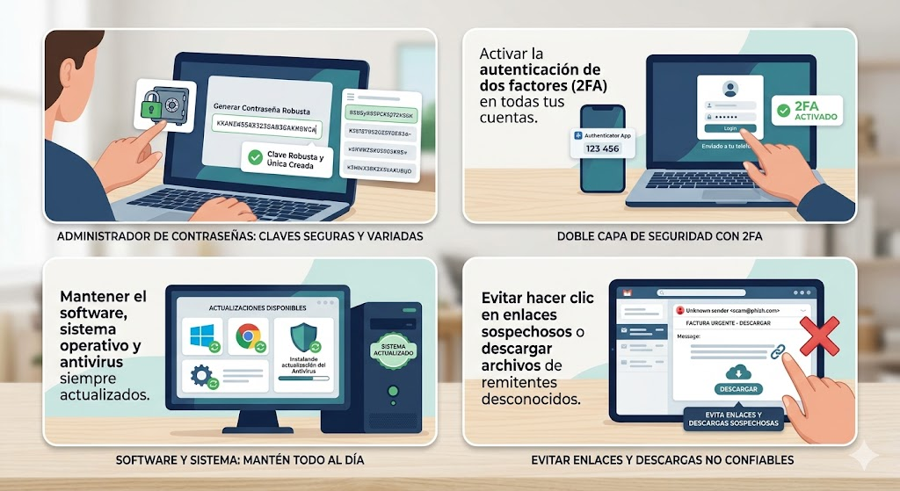

Pilares Fundamentales
Toda estrategia de ciberseguridad se basa en el principio de la "Tríada CID":

- Confidencialidad: Garantizar que la información solo sea accesible por las personas autorizadas.
- Integridad: Proteger los datos para que no sean alterados, manipulados o eliminados por error o por terceros.
- Disponibilidad: Asegurar que los usuarios legítimos tengan acceso a los sistemas y datos cuando los necesiten.
Tipos de Ciberseguridad
Existen múltiples capas de protección para cubrir diferentes vectores de ataque:

- Seguridad de red: Protege la infraestructura interna frente a intrusiones mediante herramientas como firewalls y VPNs.
- Seguridad de endpoints: Defiende los dispositivos individuales (computadoras, teléfonos, tabletas) contra el software malicioso.
- Seguridad en la nube: Salvaguarda los datos y aplicaciones alojados en plataformas remotas.
- Seguridad de la información: Emplea cifrado y estrictos controles de acceso para proteger los datos sensibles.
Amenazas Comunes
Los ciberdelincuentes utilizan diversas técnicas para vulnerar la seguridad, entre las que destacan:

- Malware: Software diseñado para dañar o infiltrarse en un sistema, como virus o spyware.
- Ransomware: Un tipo de malware que secuestra los datos o sistemas y exige un rescate para liberarlos.
- Phishing: Suplantación de identidad mediante correos electrónicos o mensajes fraudulentos para engañar a los usuarios y robarles contraseñas o datos financieros.
Buenas Prácticas
Para proteger tu información, es recomendable adoptar medidas proactivas como:

- Utilizar administradores de contraseñas para crear claves robustas y únicas.
- Activar la autenticación de dos factores (2FA) en todas tus cuentas.
- Mantener el software, sistema operativo y antivirus siempre actualizados.
- Evitar hacer clic en enlaces sospechosos o descargar archivos de remitentes desconocidos.